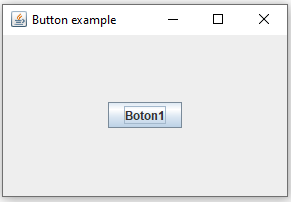
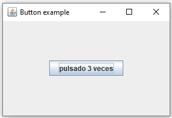
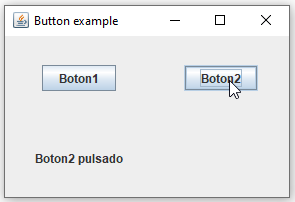

Como crear botones y asignarles acciones cuando se interactue con ellos.
Para crear un JButton, lo hacemos así:
JButton boton1 = new JButton("Boton1");NOTA: Para usar el JButton tenemos que tener el siguiente import:
import javax.swing.*;
El parametro que le indicamos al crear el JButton es el texto que mostrará el boton por defecto.
Una vez tenemos creado el boton lo introducimos en nuestro contenedor:
contenedor.add(boton1, gridConstraints);El primer parametro es el componente que vamos a introducir y el segundo las propiedades del GridBagLayout para posicionar el elemento dentro del layout del contenedor.
Para asociar un evento a un boton lo hacemos creando un objeto ActionListener, definiendo la funcion actionPerformed (que es la función que se ejecutará al hacer click en el botón) y asociando el ActionListener al boton:
Primero creamos el ActionListener y definimos la función actionPerformed:
ActionListener buttonAction = new ActionListener() {
public void actionPerformed(ActionEvent e) {
numberOfClicks++;
boton1.setText("pulsado " + numberOfClicks + " veces");
System.out.println("Boton pulsado");
}
};NOTA: Para poder crear un ActionListener necesitamos el siguiente import:
import java.awt.event.*;
En este caso realizamos tres acciones dentro de la función:
A continuación asignamos el ActionListener que hemos creado al boton que habíamos creado previamente:
boton1.addActionListener(buttonAction);El resultado final al pulsar el boton es el siguiente:
El código completo es el siguiente:
import java.awt.*;
import java.awt.event.*;
import javax.swing.*;
public class ButtonActionApp extends JFrame{
int numberOfClicks = 0;
public ButtonActionApp() {
Container contenedor = getContentPane();
contenedor.setLayout(new GridBagLayout());
GridBagConstraints gridConstraints = new GridBagConstraints();
gridConstraints.gridx = 0;
gridConstraints.gridy = 0;
gridConstraints.weightx = 1.0;
gridConstraints.weighty = 1.0;
gridConstraints.ipadx = 0;
gridConstraints.insets = new Insets(10, 10, 10, 10);
JButton boton1 = new JButton("Boton1");
contenedor.add(boton1, gridConstraints);
ActionListener buttonAction = new ActionListener() {
public void actionPerformed(ActionEvent e) {
numberOfClicks++;
boton1.setText("pulsado " + numberOfClicks + " veces");
System.out.println("Boton pulsado");
}
};
boton1.addActionListener(buttonAction);
pack();
setVisible(true);
setResizable(true);
setSize(300, 200);
setTitle("Button example");
setDefaultCloseOperation(EXIT_ON_CLOSE);
}
public static void main(String[] args) {
new ButtonActionApp();
}
}Conseguir el siguiente resultado:
Dos botones y un label, cuando se pulsa uno de los botones el label muestra el botón que ha sido pulsado.
Java | Swing | JButton